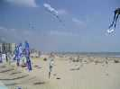
Les deux premiers jours : Saint-Jean-de-Monts. Que du beau temps, d'ailleurs on n'a pas vu un nuage en 4 jours. Les marchands de crème solaire ouvrent bien leur année ! Pour le vent il y en a, on ne peut pas dire, mais il souffle de la terre, donc de derrière les immeubles. A St-Jean, on fera avec. Mais à Pornichet où les immeubles sont deux fois plus haut et forment un front continu, ça deviendra très risqué et les volontaires décroîtront au fil des heures, devant les rafales passant de 0 à Force 5 ou 6 en quelques secondes !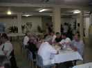
Commençons donc par l'accueil, qui témoigne à la fois d'une organisation puissante et de GO souriants comme Carole et toujours prêts à donner plus.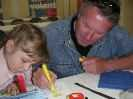
A Saint-Jean, les repas sont fournis le matin et à midi dans le réfectoire au sous-sol du Palais des Congrès.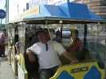
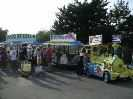
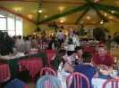
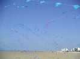
Sur la plage, le lendemain, des arches multiples, "et encore y a pas tout" dit l'auteur.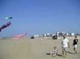
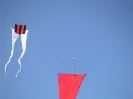
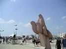
Les vols ont lieu face à la Place des Oiseaux, baptisée ainsi en l'honneur de mes créations (je remercie bien la municipalité).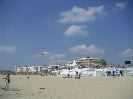
Le public n'est pas absent, ni les cerfs-volants.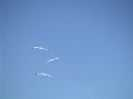
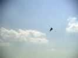
Les noires sont inspirées des compositions de Miro.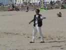
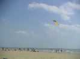
Les Edos bicolores sont des compositions très architecturées, il en existe une gamme de semblables, mais tous légèrement différents.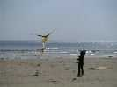
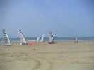
Le Samedi, Pornichet, donc, pour 2 jours aussi. A coté des cerfs-volants : des championnats de France de chars, chars à voile très sophistiqués, souvent sur 2 de leurs roues lenticulaires,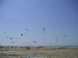
et chars à cerfs-volants, avec des Peter Lynn, des voiles à caissons, et des voiles sans dessous, mais avec des nervures verticales rigidifiées par des joncs, et intermédiaires en performances entre les 2 autres types.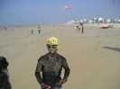
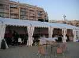
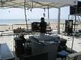
La sono cerfs-volants est musclée aussi, mais c'est presque partout pareil : les sonoMen trouvent leur fierté à cracher du décibel au point d'empêcher les conversations sur la plage (mais si !) mais ne sont pas capables en 4 jours de fournir un micro qui marche ! (enfin, ils marchent bien sauf si on parle dedans plus de deux secondes...).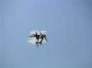
Mais le vent est encore pire qu'à Saint-Jean-de-Monts, et les immeubles plus hauts et plus continus ! Voler devient une galère sans nom, c'est le cas de le dire, Jean-Paul n'arrête pas de lancer le kayak à l'eau, avec une ficelle à l'arrière, le propriétaire du CV coupé pagayant dur pour arriver avant que ledit CV ne disparaisse... Je n'ai pas pris de photos, c'est moi qui ramais... L'Albatros 3 fois à la mer en 4 jours (sans compter les piqués sur le sable) c'est quand même une bonne dose. Mais le vol de nuit au milieu du feu d'artifice, c'était grandiose.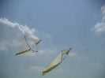
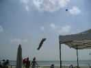
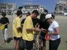
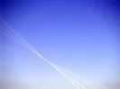
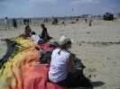
Toujours dans le domaine des noeuds, le bol AWITA a explosé les suspentes. Croyez pas que les cerfs-volistes assis dessus sont là pour bronzer sans se mettre du sable partout :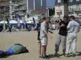
ils tiennent le bol fermé de crainte que le vent ne s'engouffre dedans, et ne tire 200 kg sur les brides défaites et les petits doigts calculés pour à peu près 20 kg chacun (et encore, en tirant bien droit !) des démêleurs.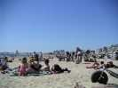
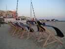
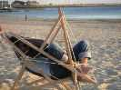
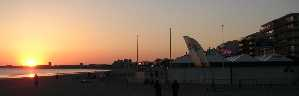